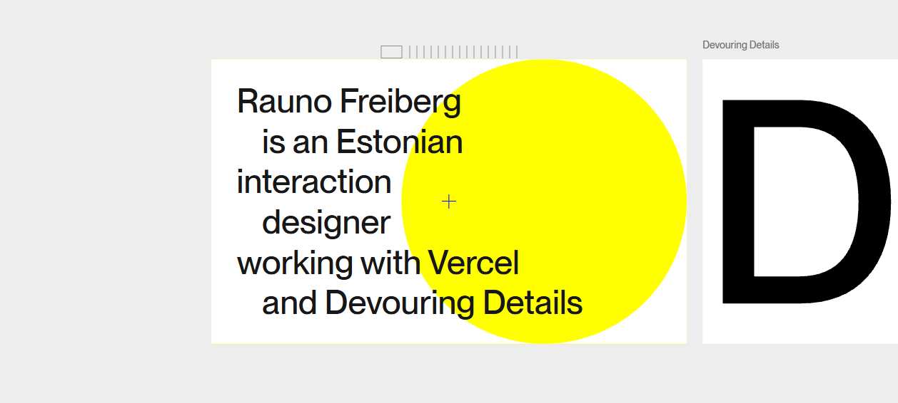
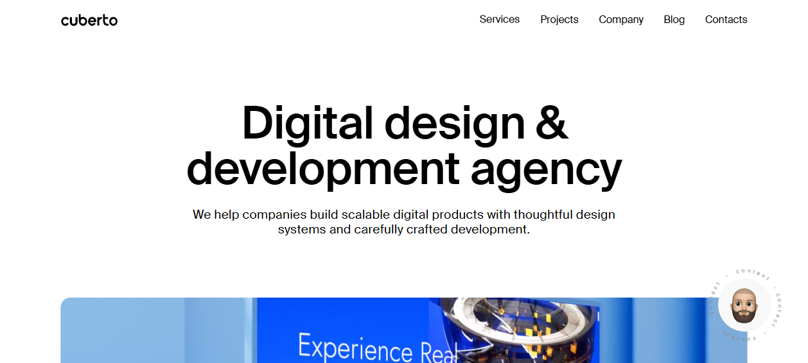

Microinteractions & Interaction Design
A page can look perfect frozen and still feel dead. Interaction is the conversation between pointer and pixel — the hover that confirms "yes, this is clickable," the button that leans toward your cursor, the copy that flips to "Copied," the hold that fills before it commits. This is the craft of affordance (telling the user what's possible) and feedback (confirming what just happened), garnished with delight. Here is how the best 80 sites make the interface feel alive under the hand.
1 · Affordance & feedback — the two jobs
Every microinteraction does one of two things, and the great ones do both. Affordance signals possibility before you act (the cursor turns into a hand, the link underlines, the button glows). Feedback confirms the result after you act (the toggle slides, the row highlights, the text says "Copied"). A click with no feedback feels broken; an element with no affordance feels invisible. Everything below is a variation on these two jobs.
The cheapest, highest-signal version of this is colour-as-affordance. jhey tompkins ↗ reserves a single hot OKLCH coral strictly for interactive and live elements — so the moment something is that colour, you know it does something, with zero UI chrome. Linear ↗ goes the opposite, monochrome route: kill brand colour in the chrome so colour only ever appears inside the product UI, making "colour = the product." Mike Hall ↗ proves the typographer's version — links inherit text colour and earn their affordance from underline + context, not default blue.
The whole discipline in one line: tell the user what's possible (affordance), then confirm what happened (feedback) — within ~100ms, on a property that doesn't cost a layout. Everything fancier (cursors, magnetism, hold-to-confirm) is just these two jobs wearing a costume.
2 · Hover states & focus-by-contrast
Hover is the workhorse. The amateur move is to highlight the thing you're hovering. The senior move, seen again and again in the corpus, is focus-by-contrast: brighten the hovered item and dim its siblings, so attention is sculpted, not just pointed.
Brittany Chiang ↗ is the reference implementation — hovering an experience or project row turns its title teal and fades a faint card behind it, while sibling rows dim slightly. Her external-link arrows (↗) nudge up-right on hover, a tiny directional affordance. Cuberto ↗ swaps nav labels with a vertical text-slide (a duplicated label slides up as the original slides out). Aristide Benoist ↗ runs a "default grayscale, colour on focus" world — desaturating everything until interaction, so the active project is the only colourful thing on screen. Family ↗ keeps it soft and bouncy to match its rounded illustration vocabulary; Jesper Landberg ↗ ships a reusable js-scale hover primitive instead of bespoke per-element code.

Focus-by-contrast — hover any row. Note the siblings dim, the active row leans, arrow and title go amber:
.list:hover .row { opacity:.45 } dims everyone, then .row:hover overrides back to full. No JS, no scroll handler./* Focus-by-contrast (the Brittany Chiang pattern) — CSS only. */
.list:hover .row { opacity: .45; } /* dim the crowd */
.list .row:hover { opacity: 1; transform: translateX(4px); } /* spotlight one */
.list .row:hover .title{ color: var(--accent); }
.row .arrow { transition: transform .25s ease; }
.row:hover .arrow { transform: translate(3px, -3px); } /* ↗ nudges away */Hover is a desktop-only luxury — gate it. Touch devices have no hover; a :hover state that "sticks" after a tap is a classic mobile bug. Wrap hover-only flourishes in @media (hover: hover) and (pointer: fine) so phones never inherit them, and make sure the resting state is already usable.
3 · Custom cursors
Replacing the OS arrow is the single loudest interaction signal a site can send — and the most over-abused. Done with intent it becomes brand identity; done thoughtlessly it adds lag and breaks affordance. The corpus splits into two schools.
The signature follower. Cuberto ↗ open-sourced its own mouse-follower library: a skewing, state-changing dot that morphs into text labels, scales up, and shows drag hints on hover — it is the Cuberto trademark. Jesper Landberg ↗'s calling card is a circular cursor "mask" that reveals the next project underneath and "pulls up" into a page transition. Active Theory ↗ handles pointer feedback entirely inside its WebGL UI layer (so the CSS cursor stays auto while hit-testing happens in GL space).
The tactile, low-cost cursor. Rauno Freiberg ↗ uses a fine blue crosshair on the canvas that swaps to a retro pixel pointing-hand over interactive cards — nostalgic, and it reinforces what's clickable. Brittany Chiang ↗ doesn't replace the cursor at all; she tracks it with a large radial-gradient spotlight on the dark background — cheap to build, high perceived polish, and it never interferes with affordance.

The trap with a fully custom cursor is latency: if you move the element on every mousemove, it lags behind the real pointer and feels cheap. The fix is to lerp (linear-interpolate) the follower toward the target inside a single requestAnimationFrame loop, and to use transform: translate3d() so it runs on the compositor.
// Smooth custom-cursor follower — lerp + rAF, compositor-only transform.
const dot = document.querySelector('.cursor');
let mx = 0, my = 0, cx = 0, cy = 0; // mouse target vs. current follower
addEventListener('pointermove', (e) => { mx = e.clientX; my = e.clientY; });
function tick() {
cx += (mx - cx) * 0.18; // ease toward target (the "weight")
cy += (my - cy) * 0.18;
dot.style.transform = `translate3d(${cx}px, ${cy}px, 0)`;
requestAnimationFrame(tick);
}
// Only run on real pointers; leave touch + assistive tech the native cursor.
if (matchMedia('(hover: hover) and (pointer: fine)').matches) tick();
// State changes via data-attr the cursor reads (label, scale, "drag" hint):
document.querySelectorAll('[data-cursor]').forEach((el) => {
el.addEventListener('pointerenter', () => dot.dataset.state = el.dataset.cursor);
el.addEventListener('pointerleave', () => dot.dataset.state = '');
});A custom cursor must never hide affordance or break a11y. If you set cursor:none globally and your follower lags or fails to load, the user can't tell what's clickable. Keep a real cursor:pointer fallback, never hijack the cursor on form fields or text-selection, and disable the whole thing for touch and reduced-motion. The cursor is the user's hand — borrow it, don't steal it.
4 · Magnetic buttons
A magnetic element bends toward the cursor as it approaches and snaps back on exit — it makes a target feel like it wants to be clicked. It's one of the most-copied agency interactions, and three of our teardowns name it explicitly.
Cuberto ↗ ships magnetic pill buttons ("What we do", "Get in touch") that attract the cursor, alongside its magnetic cursor. Dennis Snellenberg ↗ makes nav links and buttons magnetic (a literal magnet class) so they bend toward the pointer and snap back — his tactile hover feedback without even needing a custom cursor. Hakim El Hattab ↗, whose whole reputation is "animated, interactive and sometimes unexpected," uses magnetic pulls among his microinteraction vocabulary.

Magnetic button — move your cursor near it; the button and its label lean toward you, then snap back:
// Magnetic button — translate a fraction of the cursor offset within the bounds.
function magnetize(btn, strength = 0.35, labelStrength = 0.6) {
const label = btn.querySelector('.mag-label');
btn.addEventListener('pointermove', (e) => {
const r = btn.getBoundingClientRect();
const x = e.clientX - (r.left + r.width / 2); // offset from centre
const y = e.clientY - (r.top + r.height / 2);
btn.style.transform = `translate(${x * strength}px, ${y * strength}px)`;
label.style.transform = `translate(${x * labelStrength}px, ${y * labelStrength}px)`;
});
btn.addEventListener('pointerleave', () => { // CSS transition snaps it back
btn.style.transform = label.style.transform = '';
});
}
if (matchMedia('(hover: hover) and (pointer: fine)').matches)
document.querySelectorAll('[data-magnetic]').forEach((b) => magnetize(b));Keep strength under ~0.4 and the snap-back springy. Too much pull and the button outruns the cursor; too stiff a return and it feels mechanical. A cubic-bezier(.18,.9,.32,1.1) ease-back (slight overshoot) is what reads as "magnetic" rather than "sliding." Reserve magnetism for primary CTAs and nav — making everything magnetic destroys the signal.
5 · Drag, scrub & physics
Drag turns the pointer into a direct-manipulation handle — grab the world and throw it. The corpus uses it for galleries, scrubbers, and physics toys, almost always with inertia so a flick keeps coasting.
Aristide Benoist ↗ drives a WebGL horizontal filmstrip where scroll/drag velocity warps the blades (the classic "scroll velocity → vertex distortion" technique), with a tick-ruler that animates as a live position scrubber. Rauno Freiberg ↗ makes horizontal drag through a card track the core interaction, with a draggable scrubber tied to scroll position. Off Menu ↗ turns its portfolio into a draggable scatter field / orbit where dragging repositions thumbnails around a centre stage. Cassie Evans ↗ and Jesper Landberg ↗ both ship drag-based horizontal navigation (Jesper's locked against vertically-scrolling titles). Things / Cultured Code ↗ is the counterpoint: its famous drag delight lives inside the app, and the marketing site deliberately doesn't fake it on the web — knowing when not to is also craft.
The native-feeling implementation uses Pointer Events (one code path for mouse, touch, and pen) with setPointerCapture so the drag survives leaving the element, plus a velocity-based inertia coast on release:
// Drag-to-scroll with inertia — Pointer Events, one path for mouse + touch + pen.
const track = document.querySelector('.track');
let down = false, startX = 0, startScroll = 0, vel = 0, lastX = 0, raf;
track.addEventListener('pointerdown', (e) => {
down = true; startX = lastX = e.clientX; startScroll = track.scrollLeft;
track.setPointerCapture(e.pointerId); // keep events even outside the box
cancelAnimationFrame(raf); track.classList.add('dragging');
});
track.addEventListener('pointermove', (e) => {
if (!down) return;
vel = e.clientX - lastX; lastX = e.clientX; // px since last frame = velocity
track.scrollLeft = startScroll - (e.clientX - startX);
});
track.addEventListener('pointerup', () => {
down = false; track.classList.remove('dragging');
(function coast() { // inertia: decay the flick
if (Math.abs(vel) < 0.5) return;
track.scrollLeft -= vel; vel *= 0.92;
raf = requestAnimationFrame(coast);
})();
});Make drag look draggable. A scatter field or filmstrip with no affordance just looks broken until someone accidentally grabs it. Swap to cursor: grab (then grabbing while held), show a ruler/scrubber or peeking next-card edge, and consider a one-time "drag" hint on the custom cursor — exactly Cuberto's drag-hint cursor state.
6 · Click-and-hold & state feedback
A plain click is instant and irreversible. Click-and-hold inserts a deliberate, cancellable progress window — the user presses, a fill animates, and only a completed hold commits. It's an affordance for intent (great for destructive or high-stakes actions) and a delight beat in its own right. It's also the gateway to the broader topic this section closes on: buttons that report their own state.
The everyday hero of state feedback is the copy-to-clipboard flip. Rauno Freiberg ↗ is known for the copy-email button that flips to a "Copied" state instead of a raw mailto: — a tiny detail that signals care. Hakim El Hattab ↗'s inline +++ expanders reveal more text in place on click, keeping the reader in flow rather than navigating away. Linear ↗ wires up live priority pickers, label chips, and "Set priority" buttons whose press states communicate product capability through touch. Across the board, the rule is the same: a button must visibly acknowledge the press, then report its new state.
Click-and-hold to confirm — press and keep holding the button for one second:
scaleX fill; releasing early cancels it (no harm done). The hold completes only if you stay down — perfect for irreversible actions.Copy-to-clipboard feedback — the everyday state flip:
// Click-and-hold: commit only after a sustained press; cancel on early release.
const btn = document.getElementById('holdBtn');
const msg = document.getElementById('holdMsg');
let timer;
const start = () => {
btn.classList.add('holding'); // CSS animates the fill (1s)
timer = setTimeout(() => {
btn.classList.add('done'); msg.textContent = 'Deleted ✓';
}, 1000);
};
const cancel = () => {
clearTimeout(timer);
if (!btn.classList.contains('done')) { btn.classList.remove('holding'); }
};
btn.addEventListener('pointerdown', start);
btn.addEventListener('pointerup', cancel);
btn.addEventListener('pointerleave', cancel); // sliding off cancels too
// Copy-to-clipboard with a temporary "Copied" state (the Rauno pattern).
const copyBtn = document.getElementById('copyBtn');
const label = document.getElementById('copyLabel');
copyBtn.addEventListener('click', async () => {
await navigator.clipboard.writeText(label.textContent);
const original = label.textContent;
copyBtn.classList.add('copied'); label.textContent = 'Copied';
setTimeout(() => { copyBtn.classList.remove('copied'); label.textContent = original; }, 1500);
});Hold-to-confirm needs a keyboard equivalent. A keyboard user can't "hold" a pointer — provide a focusable fallback (e.g. Enter opens a confirm step) and announce state changes via aria-live (note the role="status" above) so screen-reader users hear "Deleted," "Copied," etc. A microinteraction nobody-with-a-screen-reader can perceive is decoration, not feedback.
7 · Delight, sound & easter eggs
Once affordance and feedback are solid, delight is the surplus — the unrequested moment that makes someone smile and remember the site. The corpus is full of it, and the pattern is always the same: small, in-character, and never blocking the task.
Josh Comeau ↗ goes furthest: optional UI sound behind a global "Disable sounds" toggle, editable generative hero art, spring-based hover playfulness, and a footer easter egg (upside-down avatar) — the homepage is a live demo of his craft. Brittany Chiang ↗ hides a Tardis time-travel easter egg that injects personality without breaking her minimalist tone. jhey tompkins ↗ animates a blinking bear mascot and a live "now" status block (location, weather, local time, current song and game) that makes a static page feel present-tense and human. Dennis Snellenberg ↗ seeds tiny meta-details — a live local-time clock and a multilingual greeting preloader — as personality moments. Robb Owen ↗ earns "elegant motion design" praise with an emoji-prefilled mailto: (subject: 🤘 Hi Robb, I'd like to hire you) — delight with zero backend.
Cursor-tracking spotlight (the Brittany Chiang flourish) — move your pointer across this box:
A radial glow follows the cursor. Cheap to build (one CSS variable per axis), high perceived polish.
--mx, --my) updated on pointermove drive a radial-gradient. No library, no canvas.// Cursor-tracking spotlight — two CSS vars, no library.
const spot = document.getElementById('spot');
spot.addEventListener('pointermove', (e) => {
const r = spot.getBoundingClientRect();
spot.style.setProperty('--mx', `${e.clientX - r.left}px`);
spot.style.setProperty('--my', `${e.clientY - r.top}px`);
});
/* CSS: background: radial-gradient(220px circle at var(--mx) var(--my), …); */Delight that lands shares three traits: it's discoverable, not mandatory (the user can ignore it), in-character (jhey's bear, Josh's sounds, Robb's emoji mailto — each matches its brand), and cheap to skip (toggleable sound, a fallback mailto:). Delight is seasoning. Solve affordance and feedback first; sprinkle delight last.
8 · Accessibility, performance & the overuse trap
Every interaction on this page can become a liability. The discipline that separates elite work from the demo-reel is knowing the cost.
Don't let interaction lock out the keyboard or screen reader
Hover-only menus, drag-only galleries, and hold-only buttons all assume a fine pointer that many users don't have. Every interaction needs a focusable, operable path: :focus-visible states that mirror hover, keyboard alternatives for drag and hold, and aria-live regions so state flips ("Copied", "Deleted") are heard. Brittany Chiang ↗ markets accessibility as a feature (skip-link, semantic landmarks, "opens in a new tab" labels) — and she's an a11y engineer, so it's lived, not claimed. Linear ↗ bakes in skip-nav and proper listbox/option/combobox roles on its interactive replicas.
Animate the cheap properties, and only on real pointers
Custom cursors, magnets, and parallax drag all fire on pointermove — potentially hundreds of times a second. Keep every one of them on transform/opacity (compositor-only, no layout), batch updates inside a single requestAnimationFrame, and gate the whole lot behind @media (hover: hover) and (pointer: fine) so phones never pay for desktop flourishes.
/* The floor: mirror every hover affordance for keyboard, and respect motion prefs. */
.row:hover, .row:focus-visible { /* same brightened state for mouse AND keyboard */ }
@media (hover: hover) and (pointer: fine) {
/* custom cursor, magnetic buttons, hover-spotlights live ONLY here */
}
@media (prefers-reduced-motion: reduce) {
.magnet, .cursor, .spotlight { transition: none !important; transform: none !important; }
/* drop magnetism, cursor lag, parallax — keep instant, legible feedback */
}The overuse trap is real and the corpus warns against it both ways. A custom cursor + magnetic everything + drag galleries + sound on one page is noise, not craft — each effect cancels the others' signal. Things / Cultured Code ↗ ships an almost motion-free marketing site on purpose ("world-class can mean knowing when NOT to animate"). Mike Hall ↗ makes the absence of motion the flex — CSS-only theming, no custom cursor, no scroll-jacking. Lee Robinson ↗ deliberately ships no smooth-scroll on a reading site. Pick one or two signature interactions, execute them flawlessly, and let restraint do the rest.
The elite interaction stack, distilled: colour = affordance (one accent for "this does something") → focus-by-contrast hover (brighten one, dim the rest) → one signature flourish (custom cursor or magnetism or drag — rarely all three) → honest state feedback (copy flips, holds fill, toggles slide, announced via aria-live) → all of it on transform/opacity, gated to fine pointers, and collapsed under prefers-reduced-motion. Affordance and feedback are the job; delight is the tip.